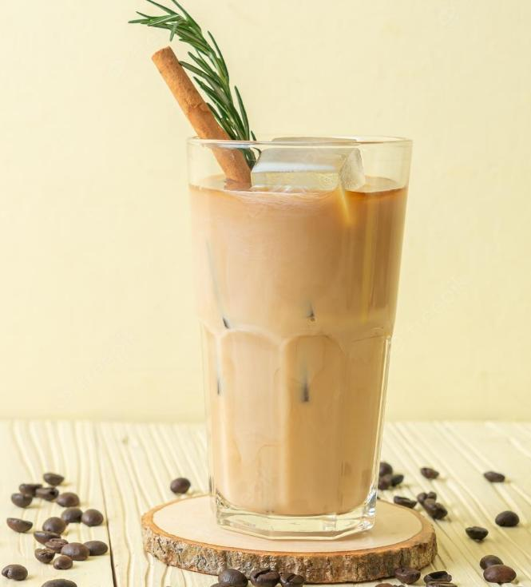

Rosemary Coffee Milk Tea

Quick and Easy
I wanted something more to do with the rosemary tea I make as a hair wash, so I started
using some of it to drink. I wanted it to be sweet, have protein from soy milk,
caffeine, and the rosemary tea. So this is my all in one drink of leisure.
Ingredients
- Rosemary
- Cold Brew Coffee Conentrate
- Milk
- maple syrup or sweetener of choice
Steps
- With enough water to boil rosemary leaves until tea is to taste
- Remove tea and add cold milk, sweetener, and cold brew concentrate
- Add ice optional